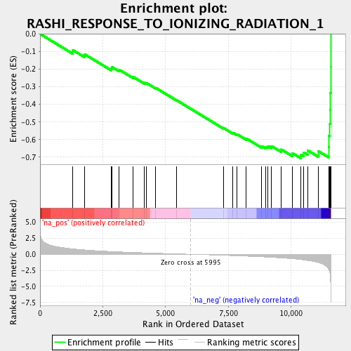

| | | Dataset | RG_PDR |
| Phenotype | NoPhenotypeAvailable |
| Upregulated in class | na_neg |
| GeneSet | RASHI_RESPONSE_TO_IONIZING_RADIATION_1 |
| Enrichment Score (ES) | -0.70678777 |
| Normalized Enrichment Score (NES) | -2.2342741 |
| Nominal p-value | 0.0 |
| FDR q-value | 1.2491194E-4 |
| FWER p-Value | 0.002 |
Table: GSEA Results Summary

Fig 1: Enrichment plot: RASHI_RESPONSE_TO_IONIZING_RADIATION_1
Profile of the Running ES Score & Positions of GeneSet Members on the Rank Ordered List
| PROBE | GENE SYMBOL | GENE_TITLE | RANK IN GENE LIST | RANK METRIC SCORE | RUNNING ES | CORE ENRICHMENT | | 1 | SLC2A1 | | | 1304 | 0.836 | -0.0918 | No |
| 2 | LIN9 | | | 1776 | 0.676 | -0.1156 | No |
| 3 | AP1M1 | | | 2840 | 0.428 | -0.1968 | No |
| 4 | DNAJC17 | | | 2859 | 0.425 | -0.1876 | No |
| 5 | NEDD8 | | | 3155 | 0.374 | -0.2037 | No |
| 6 | GADD45A | | | 3711 | 0.284 | -0.2446 | No |
| 7 | SLBP | | | 4147 | 0.224 | -0.2767 | No |
| 8 | ADRB2 | | | 4240 | 0.211 | -0.2793 | No |
| 9 | TIMM8A | | | 4605 | 0.167 | -0.3066 | No |
| 10 | SEC23A | | | 5433 | 0.066 | -0.3766 | No |
| 11 | VEGFA | | | 7296 | -0.156 | -0.5339 | No |
| 12 | SERPINB6 | | | 7681 | -0.212 | -0.5618 | No |
| 13 | CDK4 | | | 7846 | -0.236 | -0.5700 | No |
| 14 | SDF2 | | | 8212 | -0.291 | -0.5943 | No |
| 15 | FAM46A | | | 8816 | -0.388 | -0.6367 | No |
| 16 | PAFAH1B2 | | | 8995 | -0.427 | -0.6414 | No |
| 17 | CCT3 | | | 9074 | -0.444 | -0.6369 | No |
| 18 | CWC15 | | | 9216 | -0.476 | -0.6372 | No |
| 19 | SGK1 | | | 9606 | -0.565 | -0.6566 | No |
| 20 | G0S2 | | | 10041 | -0.692 | -0.6767 | No |
| 21 | JUN | | | 10389 | -0.834 | -0.6858 | Yes |
| 22 | HIST2H2AB | | | 10503 | -0.894 | -0.6730 | Yes |
| 23 | ATF3 | | | 10666 | -0.978 | -0.6624 | Yes |
| 24 | IER2 | | | 11069 | -1.274 | -0.6651 | Yes |
| 25 | WDR74 | | | 11488 | -2.366 | -0.6416 | Yes |
| 26 | IER3 | | | 11508 | -2.519 | -0.5797 | Yes |
| 27 | DFNA5 | | | 11540 | -2.858 | -0.5103 | Yes |
| 28 | DUSP1 | | | 11553 | -3.202 | -0.4306 | Yes |
| 29 | FOS | | | 11565 | -3.874 | -0.3338 | Yes |
| 30 | ZFP36 | | | 11576 | -5.835 | -0.1876 | Yes |
| 31 | EGR1 | | | 11578 | -7.441 | -0.0000 | Yes |
Table: GSEA details [plain text format]
Fig 2: RASHI_RESPONSE_TO_IONIZING_RADIATION_1: Random ES distribution
Gene set null distribution of ES for RASHI_RESPONSE_TO_IONIZING_RADIATION_1